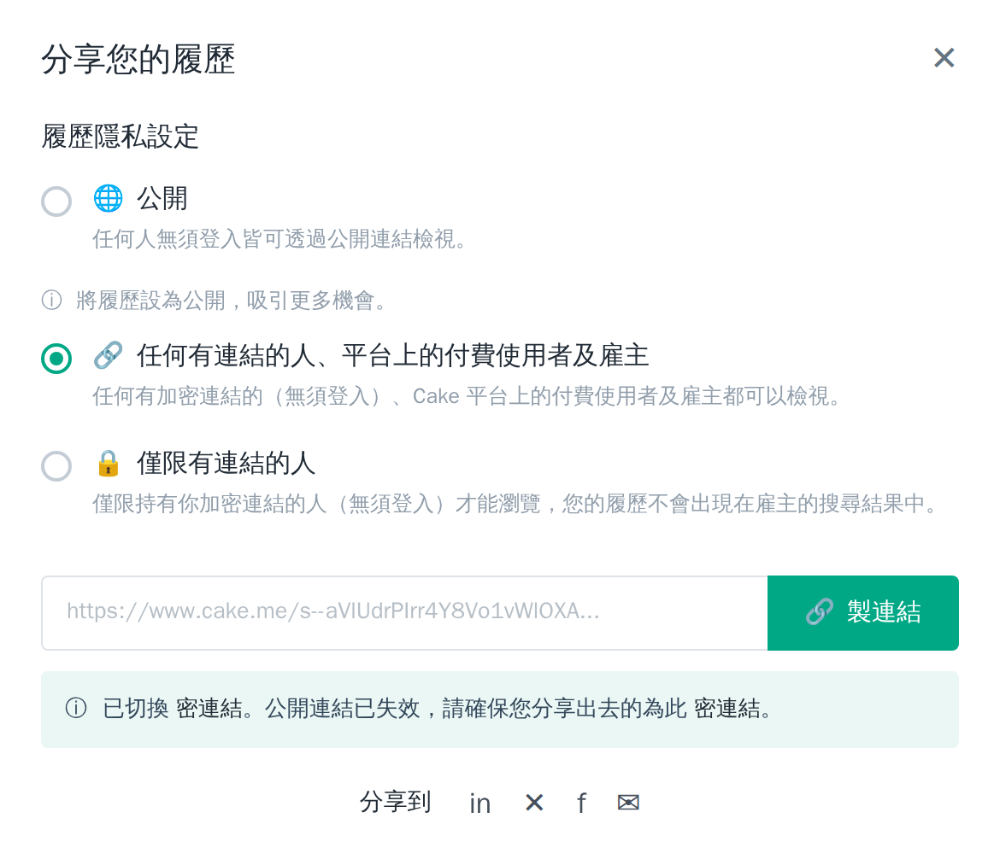
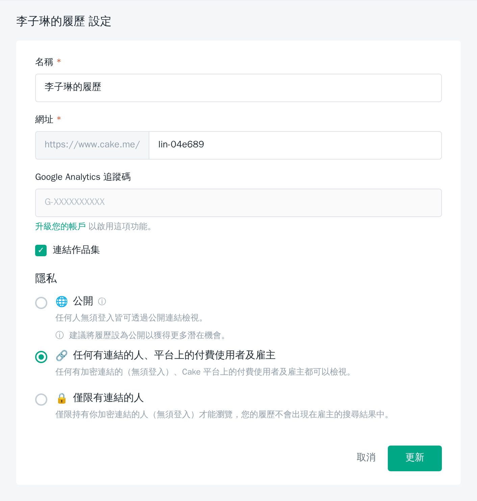

Cake 的設計取捨、1111 的現況落差，以及該學什麼、該避開什麼
| 研究主題 | Cake（CakeResume）履歷分享功能：隱私設定、連結機制、發布流程 |
| 研究目的 | 從 Cake 的設計取捨反推 1111 的機會與該迴避的坑 |
| Cake 資料來源 | 免費帳號實機操作 + 介面文案分析（cake.me/lin-04e689） |
| 1111 資料來源 | HackMD「1111 主網」團隊規格文件（共 367 篇，逐篇檢索）；引用來源見附錄 D |
| 版本 | v3.0（補入 1111 現況比對；更正 v1.x 兩處文案誤讀，見附錄 C） |
| ⚠ 資料時效提醒：1111 現況取自內部規格文件，其中《履歷各狀態規則》最後更新於 2025-08-25，已逾一年，所描述的「新版履歷狀態」是否已上線、規格是否變更，需向履歷模組的 PM 確認。其餘引用文件多為 2026 年更新，時效較新。附錄 D 列出每份文件的更新日期。 |
編號說明：§ 為章節；F＝Finding 關鍵發現（第零節 F1–F4）；A＝Action 建議行動（第九節 A1–A6）；V＝Verify 待確認（第十一節 V1–V8）。
比對後最重要的結論是：Cake 分享功能的四個弱點，1111 有三個「連對應功能都還沒有」，一個「已經做得比 Cake 好」。這不是追趕，是空白市場。
| # | Cake 的做法與代價 | 1111 現況 | 結論 | 詳見 |
| F1 | 隱私層級與網址綁定 改隱私就換網址，舊連結靜默失效、不通知使用者。 |
沒有求職者主動分享履歷的連結功能 「轉寄履歷」「列印履歷」都是廠商端功能。 |
不是改善，是 0 → 1 的新功能。若要做，一開始就把網址做成恆定的，直接繞開 Cake 的坑。 | §3 · A1 |
| F2 | 覆蓋式發布 無版本歷史，改壞救不回；也無法針對不同職缺保留多份。 |
多份履歷已支援（系統預設命名「第 N 份履歷表」，履歷進度卡片以輪播呈現全部履歷）；新版改為即時儲存。 | 這一項我們領先。剩下的缺口是「版本歷史」與「每份履歷的獨立分享連結」——後者依賴 A1。 | §4 · A3 |
| F3 | 成效數據鎖在付費牆後 只給 GA 追蹤碼欄位，且需升級帳戶。 |
求職者端沒有「誰看過我的履歷」。廠商端已有「來訪名單」（誰看過我的職缺），瀏覽 log 已在寫。 | 投報比最高的一項。資料已經在記錄了，缺的是求職者端的呈現。 | §5 · A2 |
| F4 | 隱私分級混用兩種概念 選項名稱 19 字，且私密連結仍可一鍵貼到公開社群、無警示。 |
新版模型比 Cake 更清楚：把「可否投遞（is_published）」與「可否被廠商搜尋（is_search_open）」拆成兩個獨立旗標。 | 我們的模型是對的，要守住。未來加分享連結時，別把「連結權限」又混進這兩個軸。 | §6 · A5 |
一句話結論：Cake 把履歷當「個人品牌頁」在經營，強在對外展示、弱在連結穩定與成效回饋；1111 把履歷當「投遞資料」在經營，強在多份履歷與狀態模型、但對外展示這條路徑幾乎空白。補上一個穩定的分享連結加上瀏覽成效，就能吃到 Cake 目前吃不好的那塊。
| 功能線索 | 透露的預設情境 |
| 可自訂的短網址（cake.me/lin-04e689） | 使用者會把這個網址當名片上的地址 |
| 「連結作品集」勾選項 | 履歷＋作品集是一組對外展示的內容 |
| 分享到 LinkedIn／X／Facebook 按鈕 | 預期使用者會主動散佈自己的履歷 |
| Google Analytics 追蹤碼欄位 | 把履歷當成一個需要追蹤流量的「頁面」 |
這是定位差異最直接的證據：
| Cake | 1111 | |
| 完成履歷後的預設可見性 | 鼓勵公開——「將履歷設為公開，吸引更多機會」的提示在兩個入口各出現一次 | 預設「不開放搜尋」，需求職者手動開啟才會被企業搜尋到（《履歷進度卡片》） |
| 隱含的立場 | 曝光愈多愈好 | 先保護，再由使用者決定要不要曝光 |
這個差異要守住。人力銀行的使用者很大一部分是在職找工作，「不要被現在的公司看到」是真實焦慮。1111 的保守預設是對的，不該為了衝曝光而改掉。但這也意味著——我們更需要一個「精準給特定對象看」的管道，也就是分享連結。
| 需求 | Cake | 1111 |
| ① 一個貼出去不會壞掉的地址 | 有，但會壞（F1） | 沒有 |
| ② 控制誰看得到、擋住現職雇主 | 三層級可用，但命名難懂 | 有，且模型更清楚 |
| ③ 知道有沒有人看過 | 需自行接 GA 且付費限定 | 沒有（求職者端） |
| ④ 針對不同職缺調整內容 | 覆蓋式發布，無版本並存 | 有多份履歷 |
兩邊各有兩項及格、兩項不及格，而且不重疊。這代表這個題目目前沒有任何一家做完整——先補齊四項的人就有完整的故事可以講。
| 入口 | 可操作項目 | 送出方式 |
| 分享您的履歷（圖1） | 隱私三選一、複製連結、分享到社群 | 切換即生效 |
| 履歷設定（圖2） | 名稱、自訂網址、GA 追蹤碼、連結作品集、隱私三選一 | 需按「更新」 |
| 層級 | 介面文案 | 誰看得到 | 出現在雇主搜尋 | 連結型態 |
| L1 | 🌐 公開 | 任何人（無須登入） | 是 | 公開連結 cake.me/lin-04e689 |
| L2 | 🔗 任何有連結的人、平台上的付費使用者及雇主 | 連結持有者＋付費使用者＋雇主 | 是 | 加密連結 cake.me/s--aVlUdrPIrr4Y8... |
| L3 | 🔒 僅限有連結的人 | 僅連結持有者 | 否 | 加密連結 |
值得學的文案寫法：L3 直接寫出「您的履歷不會出現在雇主的搜尋結果中」——講的是可驗證的具體行為，不是「保護您的隱私」這種形容詞。這條原則可直接套用在我們的隱私文案上。
|
分享您的履歷 履歷隱私設定 ○ 🌐 公開 ⓘ 將履歷設為公開，吸引更多機會。 ◉ 🔗 任何有連結的人、平台上的付費使用者及雇主 ○ 🔒 僅限有連結的人
分享到 in ✕ f ✉ |

圖1 原始截圖（實機畫面）
圖1（依實機截圖重繪；原始截圖檔 fig1.png 另附）
切換隱私層級後出現提示：「已切換至加密連結。公開連結已失效，請確保您分享出去的為此加密連結。」經實機操作確認：切換隱私會更換網址。
| 隱私層級 | 網址型態 | 存取控制方式 |
| 公開（L1） | 語意化短網址 cake.me/lin-04e689 | 網址本身即公開資源 |
| 加密連結（L2/L3） | 帶亂數 token cake.me/s--aVlUdrPIrr4Y8... | token 即權杖，知道網址就能看 |
切換隱私＝切換網址型態，所以另一種型態的網址自然失效。這是實作上的取捨：不必在每次請求時做權限判斷，架構單純；代價是網址不穩定。
| 使用者把連結貼在哪 | 切換隱私後 | 能否補救 |
| LinkedIn 個人檔案 | 訪客點擊打不開 | 可以，但要記得回去改 |
| Email 簽名檔 | 所有已寄出的信永久失效 | 不行 |
| 已投遞的求職信 | HR 開啟時看到錯誤頁 | 不行 |
| 名片、個人網站 | 長期失效 | 可以，但成本高 |
問題的核心不是「連結會換」，而是「換了沒人告訴你」。沒有轉址、沒有說明頁、沒有通知，求職者只會覺得「怎麼都沒有回音」。典型的高影響、低可見度問題。
逐篇檢索 367 篇規格文件後確認，求職者端沒有任何「分享我的履歷連結」功能：
| 檢索關鍵字 | 結果 |
| 履歷網址 / 履歷連結 / 分享履歷 / 公開履歷 / 短網址 | 0 篇命中 |
| 轉寄履歷 | 命中 1 篇——但 User Story 明寫「身為一個廠商，我想要將感興趣的履歷轉寄給聯絡人」，是廠商把履歷寄給同事的 Email，不是求職者對外分享 |
| 列印履歷 | 同樣是廠商端功能 |
目前求職者把履歷給出去的路徑只有兩條：透過平台投遞，或開放企業搜尋。沒有「我自己把連結貼到 LinkedIn 或寄給朋友」這條路。
這一項的性質從「改善」變成「0 → 1 的新功能」，判斷也跟著改變：
做法建議（A1）：一份履歷對應一個恆定網址，隱私層級只改變「誰打得開」而不改變網址本身。若需支援「作廢舊連結」，做成使用者主動觸發的獨立動作（「重新產生連結」按鈕）並明確告知後果，而不是隱私切換的靜默副作用。
|
您確定要發布嗎？ 這將覆蓋您目前已發佈的版本 取消 ｜ 發布 |
圖3 原始截圖（實機畫面）
圖3（依實機截圖重繪；原始截圖檔 fig3.png 另附）
Cake 有「編輯中版本／已發布版本」的雙軌概念（好設計），但沒有版本歷史，每次發布都覆蓋前一版。衍生兩個痛點：改壞了救不回來；無法針對不同職缺保留側重不同的履歷。
| 能力 | Cake | 1111 |
| 多份履歷並存 | 無（覆蓋式） | 有——系統預設命名「第 N 份履歷表」，《履歷進度卡片》以輪播形式顯示所有履歷 |
| 資料保全 | 需手動發布 | 新版改為即時儲存，欄位輸入即寫入，不再需要「儲存」按鈕 |
| 版本歷史／還原 | 無 | 文件中未見（待確認 V2） |
| 每份履歷的獨立分享連結 | 有（但會失效） | 無（因為沒有分享連結功能） |
「針對不同職缺調整履歷」這個需求，我們已經解了一半。使用者可以建多份履歷，這正是 Cake 做不到的。剩下的缺口有兩個：
簡報建議：這一節適合用來說「我們不是全面落後」。多份履歷 + 恆定連結的組合，是我們比 Cake 更完整的地方。

圖2：履歷設定頁，原始截圖（實機畫面）
履歷設定頁的「Google Analytics 追蹤碼」欄位呈灰色鎖定，註明「升級您的帳戶以啟用這項功能」。
| 求職者的問題 | Cake 目前的答案 |
| 有多少人看過我的履歷？ | 自行接 GA（且需付費） |
| 是誰看的？是不是雇主？ | GA 也答不出來（需平台端的瀏覽者身分資料） |
| 我投的那家公司點開了嗎？ | 無法區分來源 |
Cake 選的是「開一個 GA 欄位讓你自己接」而不是「內建瀏覽數據」。實作成本低，但門檻高到幾乎沒有一般求職者能用；而且後兩個問題連 GA 都答不出來，只有平台自己有資料。
這是本次比對中最有價值的發現。1111 已經有完整的瀏覽行為記錄，但全部呈現在廠商端：
| 既有功能 | 是誰在看誰 | 說明 |
| 3.1.4 來訪名單 （已上線） |
廠商 → 看誰瀏覽過我的職缺 | User Story：「身為一個廠商人資，我想要查看曾瀏覽過我職缺的求職者名單」。已有專門的瀏覽 log SP（sp_Jason_empViewedLogForOrganSelect3）、未讀／新來訪判斷、去重複計數規則 |
| 4.12 瀏覽紀錄 | 求職者 → 看自己瀏覽過的職缺 | 存於 localStorage，只留最近 5 筆。是「我看過誰」，不是「誰看過我」 |
| 缺口：求職者端沒有任何「誰看過我的履歷」的功能。檢索「被瀏覽」「誰看過」「看過我的」皆 0 篇命中。 | ||
另外值得注意：團隊已經在看這個方向——《競品分析：各求職平台網站指引》這篇文件的實際內容是 104 的「應徵成效分析」（pda.104.com.tw/apply-report/）。代表這個題目已經在雷達上，這份研究可以直接接上去。
投入報酬比最高的一項，理由是：資料層已經存在。廠商端的來訪名單證明瀏覽行為有在寫 log，而且已經處理過去重複、未讀狀態這些細節。要做求職者端的呈現，主要是查詢方向與介面的工作，不是從零建資料管線。
做法建議（A2）：免設定、開箱即用的「誰看過我的履歷」，分兩層：
把基礎數據放在免費層是刻意的——Cake 的反面教材正是把整個功能都鎖住，結果免費使用者完全無感，付費誘因無從建立。
需要確認：瀏覽者資訊揭露到什麼程度，涉及廠商端的隱私預期（廠商可能不希望「我看過誰」被對方知道）。這是產品決策，不是技術問題，建議與求才組一起討論（V5）。
命名混用兩種概念。L2「任何有連結的人、平台上的付費使用者及雇主」共 19 字，同時描述了「取得方式」（有連結）與「身分」（付費使用者、雇主）。而 L2 與 L3 的實質差異其實只有一條：能不能被搜尋到。
缺少配套提醒。隱私設為 L3「僅限有連結的人」時，介面仍提供一鍵分享到 LinkedIn／Facebook——把加密連結貼到公開動態，等於把私密連結公開，而沒有任何警示。功能本身在鼓勵使用者做出違背自己設定的動作。
《履歷各狀態規則》的需求原由寫得很清楚：
| 「履歷實際有兩個不同面向：是否可投遞（發布）、是否允許廠商搜尋（可見性）。現版僅以 未完成／關閉中／開啟中 三狀態描述，無法精準反映這兩個面向，造成操作心智不清楚。」 |
新版拆成三個獨立旗標：
| 旗標 | 控制什麼 | 由誰決定 |
is_complete | 完成度 | 系統判斷必填欄位 |
is_published | 是否可投遞 | 使用者按「發布」 |
is_search_open | 是否允許廠商搜尋 | 使用者獨立開關 |
| is_complete | is_published | is_search_open | 可做行為 | |
| A | false | false | false | 不可投遞、不可被搜尋 |
| B | true | false | false | 不可投遞、不可被搜尋 |
| C | true | true | false | 可投遞、不可被搜尋 |
| D | true | true | true | 可投遞、可被搜尋 |
這個模型比 Cake 的三層級清楚，因為它一個旗標只管一件事；Cake 則是把「可見範圍」和「連結型態」揉在同一個三選一裡，才會產生 F1 那種「改權限順便換網址」的副作用。
未來加入分享連結（A1）時，最大的風險是把「連結權限」又混進既有的兩個軸，重蹈 Cake 的覆轍。建議把它設計成第三個獨立的軸：
| 軸 | 回答的問題 |
| is_published | 這份履歷可以投遞嗎？ |
| is_search_open | 企業可以搜尋到我嗎？ |
| （新）連結權限 | 拿到我連結的人可以看嗎？—— 網址本身不隨此值改變 |
另外兩個低成本建議：
| 做法 | 好在哪 | 對 1111 的可行性 |
| 可自訂的個人網址 cake.me/lin-04e689 |
把履歷變成可放在名片、社群簡介上的「個人地址」，提高黏著度 | 依賴 A1。但要注意：1111 使用者是投遞心智，對「個人品牌網址」的需求可能不如 Cake 使用者強烈，建議併入 A1 一起驗證 |
| 履歷與作品集綁定分享 | 一次分享帶出兩份內容，提高說服力 | 需先確認 1111 是否有作品集功能（V6） |
| 具體的隱私承諾文案 「不會出現在雇主的搜尋結果中」 |
講可驗證的具體行為，不是「保護您的隱私」這種形容詞 | 立即可用。新版履歷狀態的四種組合（A–D）正需要對使用者說明，這正好是套用這條原則的時機 |
額外一則來自內部文件的佐證：《新版履歷編輯》收錄的使用者回饋中，有一條建議「參考 104 有兩個格式，一個叫個人品牌、一個是制式履歷，呈現會比較個性化」。這說明「個人品牌型履歷」的需求在 1111 使用者中確實存在，只是目前沒有被滿足——這條回饋可以拿來支持 A1 的需求論證。
1111 現況依 HackMD 規格文件整理；標示「待確認」者為文件中未見、需向 PM 確認的項目。
| 項目 | Cake | 1111 | 差距判斷 |
| 求職者主動分享履歷連結 | 有 | 無 | 缺口（A1，0→1） |
| 網址是否恆定 | 否（改隱私即更換） | 不適用（無此功能） | 做的話應一開始就做恆定 |
| 自訂網址 | 有 | 無 | 缺口，依賴 A1 |
| 隱私控制模型 | 3 層級三選一（混用兩種概念） | 新版拆為 is_published + is_search_open 兩個獨立旗標 | 我方較佳 |
| 完成後的預設可見性 | 鼓勵設為公開 | 預設不開放搜尋，需手動開啟 | 定位差異，我方應維持 |
| 對現職雇主隱藏 | L3 不進搜尋結果 | is_search_open = false | 能力相當 |
| 多份履歷並存 | 無 | 有（「第 N 份履歷表」） | 我方領先 |
| 版本歷史／還原 | 無 | 文件未見，待確認（V2） | 可能同為缺口（A3） |
| 資料保全機制 | 需手動發布 | 新版即時儲存 | 我方較佳 |
| 求職者端履歷瀏覽統計 | 僅 GA 欄位，付費限定 | 無（廠商端已有來訪名單，瀏覽 log 已存在） | 缺口，但資料已備（A2） |
| 作品集連結 | 有 | 待確認（V6） | — |
| 連結有效期限／密碼保護 | 未見（V7） | 不適用（無分享連結） | — |
| # | 建議行動 | 影響 | 成本 | 優先度 | 對應 |
| A2 | 求職者端「誰看過我的履歷」 基礎數據免費、進階資訊付費。資料層已存在（廠商端來訪名單的瀏覽 log） |
高 | 低–中 | 最高 | F3 |
| A5 | 隱私狀態的文案與變更前提示 套用 Cake 的「具體行為」文案原則，說明新版 A–D 四種狀態組合 |
中 | 低 | 高 | F4 |
| A1 | 可分享的恆定履歷連結 網址不隨隱私變動；作廢做成明示的獨立動作。建議先做需求驗證 |
高 | 中 | 中–高 | F1 |
| A3 | 履歷版本歷史 保留最近數個版本可還原（即時儲存讓誤刪風險更高） |
中 | 中 | 中 | F2 |
| A4 | 可自訂的履歷網址 A1 的延伸，非獨立項目 |
中 | 低 | 低–中 | §7 |
| A6 | 私密狀態下的分享提醒 做了 A1 之後才需要 |
低 | 低 | 低 | F4 |
優先度說明：相較 v2.0，A2 上升為最高——因為確認了資料層已存在，成本比原估低很多；A1 下降為中–高——因為它是 0→1 的新功能而非改善，且 1111 使用者的投遞心智是否需要分享連結尚未驗證，建議先做小規模需求確認再投入。A5 成本極低且可獨立進行，適合現在就併入新版履歷狀態的文案工作。
| 反面教訓 | 為什麼 |
| 不要把權限跟網址綁在一起 | 架構簡單的代價，是使用者失去一個可長期使用的地址。這個代價由使用者承擔、卻由平台口碑買單。 |
| 不要讓破壞性變更靜默發生 | 連結失效若無通知、無轉址、無說明頁，使用者根本不知道自己損失了機會，也不會來客訴——問題會一直存在。 |
| 不要把基礎成效數據整個鎖在付費牆後 | 免費使用者完全無感，付費誘因就建立不起來。應該是「讓他看到一部分，才會想要全部」。 |
| 不要讓一個設定同時控制兩件事 | Cake 的隱私三選一同時決定了「可見範圍」和「網址型態」，這才是 F1 的根因。我們新版的旗標拆分是對的，加分享連結時要繼續守住。 |
| # | 待確認 | 對象／方式 | 優先級 |
| V1 | 《履歷各狀態規則》的新版狀態模型是否已上線（文件最後更新 2025-08-25，已逾一年） | 履歷模組 PM | 高 |
| V2 | 1111 是否有履歷版本歷史／還原機制（文件未見） | 履歷模組 PM | 高 |
| V3 | Cake 舊連結失效後，訪客實際看到什麼畫面（404／登入牆／說明頁） | 無痕視窗實測 | 高 |
| V4 | 1111 使用者對「分享履歷連結」的真實需求強度——投遞心智下是否需要 | 客服回饋 / 使用者訪談 / 小規模問卷 | 高 |
| V5 | 求職者端揭露瀏覽者資訊的範圍，是否影響廠商端的隱私預期 | 與求才組討論 | 高 |
| V6 | 1111 是否有作品集功能，能否與履歷綁定分享 | 內部確認 | 中 |
| V7 | Cake 付費方案的完整功能矩陣（連結期限、密碼保護是否為付費項） | Cake 官網 | 中 |
| V8 | Cake 修改自訂網址後舊網址是否失效；L2↔L3 互切 token 是否更換 | 實機測試 | 中 |
| 位置 | 原文 |
| 圖1 標題／區塊標題 | 分享您的履歷／履歷隱私設定 |
| L1 | 公開／任何人無須登入皆可透過公開連結檢視。 |
| L1 提示 | 將履歷設為公開，吸引更多機會。（圖2 為「建議將履歷設為公開以獲得更多潛在機會。」） |
| L2 | 任何有連結的人、平台上的付費使用者及雇主／任何有加密連結的（無須登入）、Cake 平台上的付費使用者及雇主都可以檢視。 |
| L3 | 僅限有連結的人／僅限持有你加密連結的人（無須登入）才能瀏覽，您的履歷不會出現在雇主的搜尋結果中。 |
| 圖1 按鈕 | 複製連結 |
| 圖1 提示 | 已切換至加密連結。公開連結已失效，請確保您分享出去的為此加密連結。 |
| 圖2 欄位 | 名稱＊／網址＊／Google Analytics 追蹤碼／連結作品集／隱私 |
| 圖2 付費提示 | 升級您的帳戶 以啟用這項功能。 |
| 圖3 | 您確定要發布嗎？／這將覆蓋您目前已發佈的版本 |
| 名詞 | 本文件中的定義 |
| 公開連結 | Cake 可自訂的語意化網址（cake.me/lin-04e689），任何人可存取 |
| 加密連結 | Cake 帶亂數 token 的網址（cake.me/s--aVlUdrPIrr4Y8...），知道網址即可存取 |
| L1／L2／L3 | 本文件對 Cake 三個隱私層級的簡稱，由開放到封閉 |
| 靜默失效 | 連結失去作用，但擁有者不會收到任何通知或提示 |
| 覆蓋式發布 | 每次發布直接取代已發布版本，不保留歷史 |
| 版本 | 變更 |
| v1.0 – v1.1 | 初稿，以 UX 檢討視角撰寫 |
| v2.0 | 改為競品分析視角；更正兩處文案誤讀（按鈕實為「複製連結」，據此的「重新產製 token」推論已刪除；提示實為「已切換至加密連結」，據此提出的「i18n 多餘空格」問題係誤讀，已移除）；術語統一為「加密連結」 |
| v3.0 | 依 HackMD 內部規格文件補入 1111 現況比對。主要修正： 1. F1 性質改變——確認 1111 無求職者端分享連結功能，A1 由「改善」改判為「0→1 新功能」，並因需求未驗證而調降優先度。 2. A2 升為最高優先——確認廠商端來訪名單已有瀏覽 log，資料層已存在，成本低於原估。 3. F2 結論反轉——1111 已支援多份履歷且改為即時儲存，此項領先 Cake，缺口僅剩版本歷史。 4. F4 結論反轉——1111 新版的 is_published／is_search_open 旗標拆分優於 Cake 的三層級混合設計。 5. 新增 §1.2 隱私預設值對比、§8 對照表填實、§11 改為待確認事項、附錄 D 資料來源。 |
以下為本文件引用的 HackMD「1111 主網」團隊文件。日期為最後更新日，供判斷資料時效。
| 文件 | 最後更新 | 本文引用之處 |
| 履歷各狀態規則 | 2025-08-25 | §6.2 新版三旗標模型與 A–D 狀態組合、§8 隱私控制模型。時效待確認（V1） |
| 履歷進度卡片 | 2026-08-05 | §1.2 預設不開放搜尋、§4.2 多份履歷輪播 |
| 3.1.4 來訪名單 | 2026-07-21 | §5.2 廠商端瀏覽 log 已存在 |
| 4.12 瀏覽紀錄 | 2026-02-26 | §5.2 求職者端僅有「我看過的職缺」 |
| 轉寄履歷 Lightbox | 2026-07-28 | §3.3 轉寄為廠商端功能 |
| 列印履歷 lightbox | 2026-07-28 | §3.3 列印為廠商端功能 |
| 新版履歷編輯 | 2026-07-03 | §4.2 即時儲存、§7 使用者對「個人品牌型履歷」的回饋 |
| 競品分析：各求職平台網站指引 | 2026-03-06 | §5.2 團隊已在研究 104 應徵成效分析 |
檢索方法：取得團隊全部 367 篇文件內容後，以關鍵字全文檢索（履歷網址、履歷連結、分享履歷、公開履歷、短網址、被瀏覽、誰看過、多份履歷、履歷狀態等），再逐篇閱讀命中文件。標示「無」的項目為全文檢索 0 命中且人工複核後確認。
備註：文件中的圖1～圖3 為依 Cake 實機截圖重繪之示意圖；原始截圖檔（fig1.png／fig2.png／fig3.png）另行提供。